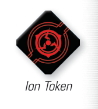

ION

A ship is ionized while it has a number of ion tokens relative to its size: one or more for a small ship, two or more for a medium ship, and three or more for a large ship. Ion tokens are red tokens.
A ship that is ionized cannot acquire or maintain locks. When a ship becomes ionized, it breaks all locks it is maintaining.
During the Activation Phase, an ionized ship activates as follows:
-
The ionized ship reveals its dial as normal.
-
During the Execute Maneuver step, the ionized ship executes an ion maneuver with the same direction shown on its dial. An ion maneuver is a blue speed 1 bank or straight [, , ] maneuver.
-
If an ionized ship's dial shows a stop [] maneuver, they perform their ion maneuver as a [1 ] maneuver.
-
The bearing, difficulty, and speed of this maneuver cannot be changed unless an ability explicitly affects the ion maneuver.
-
During the Perform Action step, the ship can perform only the action.
-
At the end of a ship's activation, if it executed an ion maneuver, it removes all of its ion tokens.
Additionally:
-
An ionized ship cannot perform any action except the action.
-
Ships cannot use abilities that trigger from an ionized ship revealing its dial.
-
If a ship that was ionized during the Planning Phase is no longer ionized at the beginning of its activation, it activates as normal.